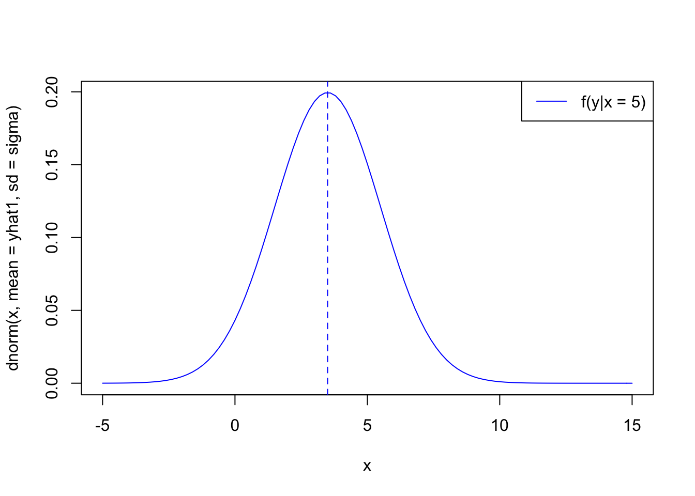

Chapter 2 Linear Regression
The general form in which we specify regression models in R:
## response ~ terms
##
## y ~ age + sex # age + sex main effects
## y ~ age + sex + age:sex # add second-order interaction
## y ~ age*sex # second-order interaction +
## # all main effects
## y ~ (age + sex + pressure)^2
## # age+sex+pressure+age:sex+age:pressure...
## y ~ (age + sex + pressure)^2 - sex:pressure
## # all main effects and all 2nd order
## # interactions except sex:pressure
## y ~ (age + race)*sex # age+race+sex+age:sex+race:sex
## y ~ treatment*(age*race + age*sex) # no interact. with race,sex
## sqrt(y) ~ sex*sqrt(age) + race
## # functions, with dummy variables generated if
## # race is an R factor (classification) variable
## y ~ sex + poly(age,2) # poly generates orthogonal polynomials
## race.sex <- interaction(race,sex)
## y ~ age + race.sex # for when you want dummy variables for
## # all combinations of the factors2.1 Simple Linear Regression
We start off with a simple OLS Regression. We will work with multiple data sources:
- Data from Wooldridge (2015) : Introductory Econometrics: A Modern Approch.
- More datasources in the future
To load the dataset and necessary functions:
# This function 1. checks if the packages are installed. 2. It installs the packages if they were not in the list of installed packages. 3. It loads the packages into the workspace
PACKAGES<-c("wooldridge", # Wooldrige Datasets
"tidyverse", # for data manipulation and ggplots
"broom", # Tidy regression output
"ggpubr", # Multiple ggplots on a page. Note that, the installation of ggpubr will automatically install the gridExtra and the cowplot package; so you don’t need to re-install them.
"ggfortify") # Simple ggplot recipe for lm objects)
inst<-match(PACKAGES, .packages(all=TRUE))
need<-which(is.na(inst))
if (length(need)>0) install.packages(PACKAGES[need])
lapply(PACKAGES, require, character.only=T)## Loading required package: wooldridge## Loading required package: tidyverse## ── Attaching packages ─────────────────────────────────────────── tidyverse 1.2.1.9000 ──## ✔ ggplot2 3.0.0 ✔ purrr 0.2.5
## ✔ tibble 1.4.2 ✔ dplyr 0.7.6
## ✔ tidyr 0.8.1 ✔ stringr 1.3.1
## ✔ readr 1.1.1 ✔ forcats 0.3.0## ── Conflicts ─────────────────────────────────────────────────── tidyverse_conflicts() ──
## ✖ dplyr::filter() masks stats::filter()
## ✖ dplyr::lag() masks stats::lag()## Loading required package: broom## Loading required package: ggpubr## Loading required package: magrittr##
## Attaching package: 'magrittr'## The following object is masked from 'package:purrr':
##
## set_names## The following object is masked from 'package:tidyr':
##
## extract## Loading required package: ggfortifyClassic examples of quantities modeled with simple linear regression:
- College GPA ∼ SAT scores \(\beta > 0\)
- Change in GDP ∼ change in unemployment \(\beta < 0\)
- House price ∼ number of bedrooms \(\beta > 0\)
- Species heart weight ∼ species body weight \(\beta > 0\)
- Fatalities per year ∼ speed limit \(\beta < 0\)
Notice that these simple linear regressions are simplifications of more complex relationships between the variables in question.
In this exercise we use the dataset ceosal1. Let us analyse the dataset first
data("ceosal1")
help("ceosal1")
?ceosal1As we see from the R documentation the ceosal1 dataset contain of a random sample of data reported in the May 6, 1991 issue of Businessweek.
To get a first look at the data you can use the View() function inside R Studio.
View(ceosal1)We could also take a look at the variable names, the dimension of the data frame, and some sample observations with str().
str(ceosal1)## 'data.frame': 209 obs. of 12 variables:
## $ salary : int 1095 1001 1122 578 1368 1145 1078 1094 1237 833 ...
## $ pcsalary: int 20 32 9 -9 7 5 10 7 16 5 ...
## $ sales : num 27595 9958 6126 16246 21783 ...
## $ roe : num 14.1 10.9 23.5 5.9 13.8 ...
## $ pcroe : num 106.4 -30.6 -16.3 -25.7 -3 ...
## $ ros : int 191 13 14 -21 56 55 62 44 37 37 ...
## $ indus : int 1 1 1 1 1 1 1 1 1 1 ...
## $ finance : int 0 0 0 0 0 0 0 0 0 0 ...
## $ consprod: int 0 0 0 0 0 0 0 0 0 0 ...
## $ utility : int 0 0 0 0 0 0 0 0 0 0 ...
## $ lsalary : num 7 6.91 7.02 6.36 7.22 ...
## $ lsales : num 10.23 9.21 8.72 9.7 9.99 ...
## - attr(*, "time.stamp")= chr "25 Jun 2011 23:03"As we have seen before in the general R tutorial, there are a number of additional functions to access some of this information directly.
dim(ceosal1)## [1] 209 12nrow(ceosal1)## [1] 209ncol(ceosal1)## [1] 12summary(ceosal1)## salary pcsalary sales roe
## Min. : 223 Min. :-61.00 Min. : 175.2 Min. : 0.50
## 1st Qu.: 736 1st Qu.: -1.00 1st Qu.: 2210.3 1st Qu.:12.40
## Median : 1039 Median : 9.00 Median : 3705.2 Median :15.50
## Mean : 1281 Mean : 13.28 Mean : 6923.8 Mean :17.18
## 3rd Qu.: 1407 3rd Qu.: 20.00 3rd Qu.: 7177.0 3rd Qu.:20.00
## Max. :14822 Max. :212.00 Max. :97649.9 Max. :56.30
## pcroe ros indus finance
## Min. :-98.9 Min. :-58.0 Min. :0.0000 Min. :0.0000
## 1st Qu.:-21.2 1st Qu.: 21.0 1st Qu.:0.0000 1st Qu.:0.0000
## Median : -3.0 Median : 52.0 Median :0.0000 Median :0.0000
## Mean : 10.8 Mean : 61.8 Mean :0.3206 Mean :0.2201
## 3rd Qu.: 19.5 3rd Qu.: 81.0 3rd Qu.:1.0000 3rd Qu.:0.0000
## Max. :977.0 Max. :418.0 Max. :1.0000 Max. :1.0000
## consprod utility lsalary lsales
## Min. :0.0000 Min. :0.0000 Min. :5.407 Min. : 5.166
## 1st Qu.:0.0000 1st Qu.:0.0000 1st Qu.:6.601 1st Qu.: 7.701
## Median :0.0000 Median :0.0000 Median :6.946 Median : 8.217
## Mean :0.2871 Mean :0.1722 Mean :6.950 Mean : 8.292
## 3rd Qu.:1.0000 3rd Qu.:0.0000 3rd Qu.:7.249 3rd Qu.: 8.879
## Max. :1.0000 Max. :1.0000 Max. :9.604 Max. :11.489The interesting task here is to determine how far a high the CEO salary is, for a given return on equity.
Your turn
What sign would be expect of \(\beta\) (the slope)?
A: Without seeing the data my prior is that \(\beta > 0\).
Note
A simple linear model as assumes that the mean of each \(y_{i}\) conditioned on \(x_{i}\) is a linear function of \(x_{i}\). But notice that simple linear regressions are simplifications of more complex relationships between the variables in question.
# Use ggplot style
ggplot(ceosal1, aes(x = roe, y = salary)) +
geom_point()Figure 2.1: Relationship between ROE and Salary
Consider a simple regression model
\(salary = \beta_0 + \beta_1roe + u\)
We are concerned with the population parameter \(\beta_{0}\) and \(\beta_{1}\). The general form of the model.
\[\begin{equation} \hat{\beta}_{0} = \bar{y} - \hat{\beta}_{1}\bar{x} \tag{2.1} \end{equation}\]
The ordinary least squares (OLS) estimators are
\[\begin{equation} \hat{\beta}_{0} = \bar{y} - \hat{\beta}_{1}\bar{x} \tag{2.2} \end{equation}\]
Ingredients for the OLS formulas
attach(ceosal1)
cov(roe, salary)## [1] 1342.538var(roe)## [1] 72.56499mean(salary)## [1] 1281.12Manual calculation of the OLS coefficients
b1hat <- cov(roe,salary)/var(roe)b0hat <- mean(salary) - b1hat * mean(roe)Or use the lm() function
lm(salary ~ roe, data=ceosal1)##
## Call:
## lm(formula = salary ~ roe, data = ceosal1)
##
## Coefficients:
## (Intercept) roe
## 963.2 18.5lm1_ceosal1 <- lm(salary ~ roe, data=ceosal1) unique(ceosal1$roe)## [1] 14.1 10.9 23.5 5.9 13.8 20.0 16.4 16.3 10.5 26.3 25.9 26.8 14.8 22.3
## [15] 56.3 12.6 20.4 1.9 19.9 15.4 38.7 24.4 15.6 14.4 19.0 16.1 12.1 16.2
## [29] 18.4 14.2 14.9 12.4 17.1 16.9 18.1 19.3 18.3 13.7 12.7 15.1 16.5 10.2
## [43] 19.6 12.8 15.9 17.3 8.5 19.5 19.2 28.1 25.0 15.0 20.3 22.7 13.2 10.3
## [57] 17.7 10.0 6.8 13.1 15.8 15.3 0.5 13.0 11.1 8.9 17.5 9.3 9.5 15.5
## [71] 8.6 24.6 7.2 11.6 26.4 21.4 9.0 9.4 3.5 22.1 33.3 22.8 20.9 6.7
## [85] 7.1 11.8 14.0 10.1 6.4 17.6 23.6 35.7 23.2 44.4 2.1 23.4 25.7 27.0
## [99] 43.7 24.8 26.2 44.5 35.1 11.0 19.4 28.5 43.9 15.7 28.2 42.2 21.5 29.5
## [113] 22.6 22.9 7.8 48.1 18.0 21.7 21.3 26.9 30.5 29.1 40.8 10.8 5.1 12.3
## [127] 7.4 6.2 10.6 2.9 13.5 10.7 11.9 12.9 7.3 14.6 14.5 14.7Plot the linear regression fit the base r way.
plot(salary~ roe, data = ceosal1,
xlab = "Return on equity",
ylab = "Salary",
main = "Salary vs return on equity",
pch = 20,
cex = 2,
col = "grey")
abline(lm1_ceosal1, lwd = 3, col = "darkorange")Figure 2.2: OLS regression base Rstyle
Or use ggplot
ggplot(ceosal1, aes(x = roe, y = salary)) +
geom_point() +
stat_smooth(method = "lm", col = "red")Figure 2.3: OLS regression ggplot2 style
Determine the names of the elements of the list using the names() command.
names(lm1_ceosal1)## [1] "coefficients" "residuals" "effects" "rank"
## [5] "fitted.values" "assign" "qr" "df.residual"
## [9] "xlevels" "call" "terms" "model"Extract one element, for example the residuals from the list object
head(lm1_ceosal1$residuals) # head() just prints out the first 6 residual values## 1 2 3 4 5 6
## -129.0581 -163.8543 -275.9692 -494.3483 149.4923 -188.2151Another way to access stored information in lm1_ceosal1 are the coef(), resid(), and fitted() functions. These return the coefficients, residuals, and fitted values, respectively.
coef(lm1_ceosal1)## (Intercept) roe
## 963.19134 18.50119The function summary() is useful in many situations. We see that when it is called on our model, it returns a good deal of information.
summary(lm1_ceosal1)##
## Call:
## lm(formula = salary ~ roe, data = ceosal1)
##
## Residuals:
## Min 1Q Median 3Q Max
## -1160.2 -526.0 -254.0 138.8 13499.9
##
## Coefficients:
## Estimate Std. Error t value Pr(>|t|)
## (Intercept) 963.19 213.24 4.517 1.05e-05 ***
## roe 18.50 11.12 1.663 0.0978 .
## ---
## Signif. codes: 0 '***' 0.001 '**' 0.01 '*' 0.05 '.' 0.1 ' ' 1
##
## Residual standard error: 1367 on 207 degrees of freedom
## Multiple R-squared: 0.01319, Adjusted R-squared: 0.008421
## F-statistic: 2.767 on 1 and 207 DF, p-value: 0.09777The summary() command also returns a list, and we can again use names() to learn what about the elements of this list.
names(summary(lm1_ceosal1))## [1] "call" "terms" "residuals" "coefficients"
## [5] "aliased" "sigma" "df" "r.squared"
## [9] "adj.r.squared" "fstatistic" "cov.unscaled"So, for example, if we wanted to directly access the value of \(R^2\), instead of copy and pasting it out of the printed statement from summary(), we could do so.
summary(lm1_ceosal1)$r.squared## [1] 0.01318862Your turn
Recall that the residual sum of squares (SSR) is
\[\begin{equation} R^2 = \frac{Var(\hat{y})}{Var(y)} = 1 - \frac{Var(\hat{u})}{Var(y)} \end{equation}\]
Calculate \(R^2\) manually:
var(fitted(lm1_ceosal1))/var(ceosal1$salary)## [1] 0.013188621 - var(residuals(lm1_ceosal1))/var(ceosal1$salary)## [1] 0.01318862Another useful function is the predict() function.
set.seed(123)
roe_sample <-sample(ceosal1$roe, 1)Let’s make a prediction for salary when the return on equity is 20.2999992.
b0hat_sample <- mean(salary) - b1hat * roe_sample We are not restricted to observed values of the explanatory variable. Instead we can supply also our own predictor values
predict(lm1_ceosal1, newdata = data.frame(roe = 30))## 1
## 1518.227The above code reads “predict the salary when the return on equity is 30 using the lm1_ceosal1 model.”
2.1.1 Regression through the Origin and Regression on a Constant
Regression without intercept (through origin)
lm2 <- lm(salary ~ 0 + roe, data = ceosal1)Regression without slope
lm3 <- lm(salary ~ 1, data = ceosal1)plot(salary~ roe, data = ceosal1,
xlab = "Return on equity",
ylab = "Salary",
main = "Salary vs return on equity",
pch = 20,
cex = 2,
col = "grey")
abline(lm1_ceosal1, lwd = 3, lty = 1, col = "darkorange")
abline(lm2,lwd = 3, lty = 2, col = "darkblue")
abline(lm3, lwd = 3, lty = 3, col = "black")
legend("topleft",
c("full",
"through origin",
"constant only"),
lwd =2,
lty = 1:3)Figure 2.4: Regression through the Origin and on a Constant
2.1.2 Simulating SLR
2.1.2.0.1 Expected Values, Variance, and Standard Errors
The Gauss–Markov theorem tells us that when estimating the parameters of the simple linear regression model \(\beta_{0}\) and \(\beta_{1}\), the \(\hat{\beta}_{0}\) and \(\hat{\beta}_{1}\) which we derived are the best linear unbiased estimates, or BLUE for short. (The actual conditions for the Gauss–Markov theorem are more relaxed than the SLR model.)
In short those assumptions are:
- SLR.1 Linear population regression function \(y = \beta_0 + \beta_{1} \times x + u\)
- SLR.2 Random sampling of x and y from the population
- SLR.3 Variation in the sample values: \(x_{1}, \dots , x_{n}\)
- SLR.4 Zero conditional mean: \(\mathbf{E}(u|x) = 0\)
- SLR.5 Homeskedasticity: \(Var(u|x) = \sigma^2\)
Recall that under SLR.1 - SLR.4 the OLS parameter estimators are unbiased. Under SLR.1 - SLR.4 the OLS parameter estimators have a specific sampling variance.
Simulating a model is an important concept. In practice you will almost never have a true model, and you will use data to attempt to recover information about the unknown true model. With simulation, we decide the true model and simulate data from it. Then, we apply a method to the data, in this case least squares. Now, since we know the true model, we can assess how well it did.
Simulation also helps to grasp the concepts of estimators, estimates, unbiasedness, the sampling variance of the estimators, and the consequences of violated assumptions.
Sample size
n <- 200True parameters
b0<- 1
b1 <- 0.5
sigma <- 2 # standard deviation of the error term u
x1 <- 5Determine the distribution of the independent variable
yhat1 <- b0 + b1 * x1 # Note that we do not include the error term Plot a Gaussian distribution of the dependent variable based on the parameters
curve(dnorm(x, mean = yhat1, sd = sigma), -5, 15, col = "blue")
abline(v = yhat1, col = "blue", lty = 2)
legend("topright", legend = c("f(y|x = 5)"), lty = 1, col = c("blue"))
This represent the theoretical (true) probability distribution of \(y\), given \(x\)
We can calculate the variance of \(b_{1}\) and plot the corresponding density function.
\[\begin{equation} var(b_2) = \frac{\sigma^2}{\sum{}{}(x_1 - \bar{x})} \tag{2.3} \end{equation}\]
Assume that \(x_{2}\) represents a second possible predictor of \(y\)
x2 <- 18
x <- c(rep(x1, n/2), rep(x2, n/2))
xbar <- mean(x)
sumxbar <- sum((x-xbar)^2)
varb <- (sigma^2)/sumxbar
sdb <-sqrt(varb)
leftlim <- b1-3*sdb
rightlim <- b1+3*sdbcurve(dnorm(x, mean = b1, sd = sdb), leftlim, rightlim,)
abline(v = b1, col = "blue", lty = 2)Figure 2.5: The theoretical (true) probability density function of b1
Draw sample of size \(n\)
x <- rnorm(n, 4, sigma)
# Another way is to assume that the values for x are fixed and know
# x= seq(from = 0, to = 10, length.out = n)u <- rnorm(n, 0, sigma)y <- b0 + b1 * x + uEstimate parameter by OLS
olsreg <- lm(y ~x )simulation.df <- data.frame(x,y)
population.df <- data.frame(b0, b1)plot(simulation.df,
xlab = "x",
ylab = "y",
# main = "Simulate least squares regression",
pch = 20,
cex = 2,
col = "grey")
abline(olsreg, lwd = 3, lty = 1, col = "darkorange")
abline(b0, b1, lwd = 3, lty = 2, col = "darkblue")
legend("topleft",
c("OLS regression function",
"Population regression function"),
lwd =2,
lty = 1:2)Figure 2.6: Simulated Sample and OLS Regression Line
lable1 <- "OLS regression function"
ggplot(simulation.df, aes(x = x, y = y)) +
geom_point() +
geom_abline(aes(intercept=b0,slope=b1,colour="Population regression function"), linetype ="dashed", show.legend = TRUE)+
stat_smooth(aes(colour ="OLS regression function"), method = "lm",se=FALSE, show.legend =TRUE)+
labs(colour = "Regression functions"
# , title = "Simulate least squares regression"
) +
theme_bw()Figure 2.7: Simulated Sample and OLS Regression Line (gpplot Style)
Since the expected values and variances of our estimators are defined over separate random samples from the same population, it makes sense to repeat our simulation exercise over many simulated samples.
# Set the random seed
set.seed(1234567)
# set sample size and number of simulations
n<-1000; r<-10000
# set true parameters: betas and sd of u
b0<-1.0; b1<-0.5; sigma<-2
# initialize b0hat and b1hat to store results later:
b0hat <- numeric(r)
b1hat <- numeric(r)
# Draw a sample of x, fixed over replications:
x <- rnorm(n,4,1)
# repeat r times:
for(j in 1:r) {
# Draw a sample of y:
u <- rnorm(n,0,sigma)
y <- b0 + b1*x + u
# estimate parameters by OLS and store them in the vectors
bhat <- coefficients( lm(y~x) )
b0hat[j] <- bhat["(Intercept)"]
b1hat[j] <- bhat["x"]
}# MC estimate of the expected values:
mean(b0hat)## [1] 0.9985388mean(b1hat)## [1] 0.5000466# MC estimate of the variances:
var(b0hat)## [1] 0.0690833var(b1hat)## [1] 0.004069063# Initialize empty plot
plot( NULL, xlim=c(0,8), ylim=c(0,6), xlab="x", ylab="y")
# add OLS regression lines
for (j in 1:10) abline(b0hat[j],b1hat[j],col="gray")
# add population regression line
abline(b0,b1,lwd=2)
# add legend
legend("topleft",c("Population","OLS regressions"),
lwd=c(2,1),col=c("black","gray"))
Figure 2.8: Population and Simulated OLS Regression Lines
Even though the loop solution is transparent, let us take a look at a different, more modern approach.
# define a function the returns the alpha -- its point estimate, standard error, etc. -- from the OLS
x <- rnorm(n,4,1) # NOTE 1: Although a normal distribution is usually defined by its mean and variance, 'rnorm()' requires the standard deviation as input for the second moment.
# NOTE 2: We use the same values for x in all samples since we draw them outside of the loop.
iteration <- function() {
u <- rnorm(n,0,sigma)
y <- b0 + b1*x + u
lm(y~x) %>%
broom::tidy() # %>%
# filter(term == 'x') # One could only extract the slope
}
# 1000 iterations of the above simulation
MC_coef<- map_df(1:1000, ~iteration())
str(MC_coef)## Classes 'tbl_df', 'tbl' and 'data.frame': 2000 obs. of 5 variables:
## $ term : chr "(Intercept)" "x" "(Intercept)" "x" ...
## $ estimate : num 1.577 0.372 1.44 0.387 1.355 ...
## $ std.error: num 0.2672 0.0639 0.2623 0.0628 0.2626 ...
## $ statistic: num 5.9 5.82 5.49 6.17 5.16 ...
## $ p.value : num 4.94e-09 7.91e-09 5.13e-08 9.92e-10 2.99e-07 ...Instead of plotting simulated and true parameter regression lines we can take a look at the kernel density of the simulated parameter estimates
Figure 2.9 shows the simulated distribution of \(\beta_{0}\) and \(\beta_{1}\) the theoretical one.
# plot the results
str(MC_coef)## Classes 'tbl_df', 'tbl' and 'data.frame': 2000 obs. of 5 variables:
## $ term : chr "(Intercept)" "x" "(Intercept)" "x" ...
## $ estimate : num 1.577 0.372 1.44 0.387 1.355 ...
## $ std.error: num 0.2672 0.0639 0.2623 0.0628 0.2626 ...
## $ statistic: num 5.9 5.82 5.49 6.17 5.16 ...
## $ p.value : num 4.94e-09 7.91e-09 5.13e-08 9.92e-10 2.99e-07 ...MC_coef<- MC_coef %>%
mutate(OLScoeff = ifelse(term == "x", "b1hat", "b0hat")) %>% # rename the x to b1hat and (Intercept) to b0hat and create a new column
mutate(Simulated = ifelse(term == "x", "b1", "b0")) # %>% ggplot(data= MC_coef, aes(estimate)) +
geom_histogram() +
geom_vline(data = filter(MC_coef, OLScoeff == "b0hat"), aes(xintercept=b0), colour="pink") +
geom_vline(data = filter(MC_coef, OLScoeff == "b1hat"), aes(xintercept=b1), colour="darkgreen") +
geom_text(data=MC_coef[3,], mapping=aes(x=estimate, y=8, label=paste("True parameter: ", MC_coef[3,7])), colour = "pink") +
geom_text(data=MC_coef[4,], mapping=aes(x=estimate, y=8, label=paste("True parameter: ", MC_coef[4,7])), colour = "darkgreen") +
facet_wrap( ~ OLScoeff, scales = "free") +
labs(
title = "Histogram Monte Carlo Simulations and True population parameters") +
theme_bw()## `stat_bin()` using `bins = 30`. Pick better value with `binwidth`.Figure 2.9: Histogram b0 and b1 and true parameter
b1_sim <- MC_coef %>%
filter(Simulated == "b1")
mean(b1_sim$estimate)## [1] 0.5011414var(b1_sim$estimate) == (sd(b1_sim$estimate))^2## [1] FALSEall.equal(var(b1_sim$estimate) , (sd(b1_sim$estimate))^2) # Floating point arithmetic!## [1] TRUEggplot(data= b1_sim, aes(estimate)) +
geom_density(aes(fill = Simulated), alpha = 0.2) + # computes and draws the kernel density, which is the smoothed version of the histogram
# stat_function(fun = dnorm, args = list(mean = mean(b1_sim$estimate), sd = sd(b1_sim$estimate)), aes(colour = "true")) +
stat_function(fun = dnorm, args = list(mean = 0.5, sd = sd(b1_sim$estimate)), aes(colour = "true")) +
# labs(
# title = "Kernel Density Monte Carlo Simulations vs. True population parameters"
# ) +
scale_color_discrete(name="") +
theme_bw()Figure 2.10: Simulated and theoretical distributions of b1
Rework this section might have mixed up what is simulated and what is biased
2.1.2.0.2 Violation of SLR.4
To implement a violation of SLR.4 (zero conditional mean) consider a case where in the population \(u\) is not mean independent of \(x\), for example
\[ \mathbf{E}(u|x) = \frac{x-4}{5} \]
# Set the random seed
set.seed(1234567)
# set sample size and number of simulations
n<-1000; r<-10000
# set true parameters: betas and sd of u
b0<-1; b1<-0.5; su<-2
# initialize b0hat and b1hat to store results later:
b0hat <- numeric(r)
b1hat <- numeric(r)
# Draw a sample of x, fixed over replications:
x <- rnorm(n,4,1)
# repeat r times:
for(j in 1:r) {
# Draw a sample of y:
u <- rnorm(n, (x-4)/5, su) # this is where manipulate the assumption of zero conditional mean
y <- b0 + b1*x + u
# estimate parameters by OLS and store them in the vectors
bhat <- coefficients( lm(y~x) )
b0hat[j] <- bhat["(Intercept)"]
b1hat[j] <- bhat["x"]
}OLS coefficients
# MC estimate of the expected values:
mean(b0hat)## [1] 0.1985388mean(b1hat)## [1] 0.7000466# MC estimate of the variances:
var(b0hat)## [1] 0.0690833var(b1hat)## [1] 0.004069063The average estimates are far from the population parameters \(\beta_0=1\) and \(\beta_1 = 0.5\)!
2.1.2.0.3 Violation of SLR.5
Homoskedasticity is not required for unbiasedness but for it is a requirement for the theorem of sampling variance. Consider the following heteroskedastic behavior of \(u\) given \(x\).
# Set the random seed
set.seed(1234567)
# set sample size and number of simulations
n<-1000; r<-10000
# set true parameters: betas and sd of u
b0<-1; b1<-0.5; su<-2
# initialize b0hat and b1hat to store results later:
b0hat <- numeric(r)
b1hat <- numeric(r)
# Draw a sample of x, fixed over replications:
x <- rnorm(n,4,1)
# repeat r times:
for(j in 1:r) {
# Draw a sample of y:
varu <- 4/exp(4.5) * exp(x)
u <- rnorm(n, 0, sqrt(varu) )
y <- b0 + b1*x + u
# estimate parameters by OLS and store them in the vectors
lm_heterosced <- lm(y~x)
bhat <- coefficients( lm(y~x) )
b0hat[j] <- bhat["(Intercept)"]
b1hat[j] <- bhat["x"]
}summary(lm_heterosced) # just the last sample of the MC-simulation##
## Call:
## lm(formula = y ~ x)
##
## Residuals:
## Min 1Q Median 3Q Max
## -23.6742 -0.9033 0.0052 1.0012 9.3411
##
## Coefficients:
## Estimate Std. Error t value Pr(>|t|)
## (Intercept) 1.24088 0.27158 4.569 5.51e-06 ***
## x 0.44561 0.06593 6.759 2.37e-11 ***
## ---
## Signif. codes: 0 '***' 0.001 '**' 0.01 '*' 0.05 '.' 0.1 ' ' 1
##
## Residual standard error: 2.075 on 998 degrees of freedom
## Multiple R-squared: 0.04377, Adjusted R-squared: 0.04281
## F-statistic: 45.68 on 1 and 998 DF, p-value: 2.367e-11Plot the residual against the regressor suspected of creating heteroskedasticity, or more generally, the fitted values of the regression.
res <- residuals(lm_heterosced)
yhat <- fitted(lm_heterosced)par(mfrow = c(1,2))
plot(x, res, ylab = "residuals")
plot(yhat, res, xlab = "fitted values", ylab = "residuals")Figure 2.11: Heteroskedasticity in the simulated data
# MC estimate of the expected values:
mean(b0hat)## [1] 1.0019mean(b1hat)## [1] 0.4992376# MC estimate of the variances:
var(b0hat)## [1] 0.08967037var(b1hat)## [1] 0.007264373Unbiasedness is provided but sampling variance is incorrect (compared to the results provided above).
2.1.3 Nonlinearities
Sometimes the scatter plot diagram or some theoretical considerations suggest a non-linear relationship. The most popular non-linear relationships involve logarithms of the dependent or independent variables and polynomial functions.
We will use a new dataset, wage1, for this section. A detailed exploratory analysis of the dataset is left to the reader.
data("wage1")
attach(wage1)2.1.3.1 Predicated variable transformation
A common variance stabilizing transformation (VST) when we see increasing variance in a fitted versus residuals plot is \(log(Y)\).
Related, to use the log of an independent variable is to make its distribution closer to the normal distribution.
# wage1$logwage <- log(wage1$wage) # one could also create a new variable
p1_wagehisto <- ggplot(wage1) +
geom_histogram(aes(x = wage), fill = "red", alpha = 0.6) +
theme_bw()
p2_wagehisto <- ggplot(wage1) +
geom_histogram(aes(x = wage), fill = "blue", alpha = 0.6) +
scale_x_continuous(trans='log2', "Log Wage") + # instead of creating a new variable with simply define that the x-scale undergoes a logarithmic transformation
theme_bw()ggarrange(p1_wagehisto, p2_wagehisto,
labels = c("A", "B"),
ncol = 2, nrow = 1)## `stat_bin()` using `bins = 30`. Pick better value with `binwidth`.
## `stat_bin()` using `bins = 30`. Pick better value with `binwidth`.Figure 2.12: Histogram of wage and log(wage)
A model with a log transformed response:
\[\begin{equation} log(Y_{i}) = \beta_{0} + \beta_{1} \times x_{i} + \epsilon_{i} \end{equation}\]
lm_wage <- lm(wage ~ educ, data = wage1)
lm_wage1 <- lm(log(wage)~ educ, data = wage1)
summary(lm_wage)##
## Call:
## lm(formula = wage ~ educ, data = wage1)
##
## Residuals:
## Min 1Q Median 3Q Max
## -5.3396 -2.1501 -0.9674 1.1921 16.6085
##
## Coefficients:
## Estimate Std. Error t value Pr(>|t|)
## (Intercept) -0.90485 0.68497 -1.321 0.187
## educ 0.54136 0.05325 10.167 <2e-16 ***
## ---
## Signif. codes: 0 '***' 0.001 '**' 0.01 '*' 0.05 '.' 0.1 ' ' 1
##
## Residual standard error: 3.378 on 524 degrees of freedom
## Multiple R-squared: 0.1648, Adjusted R-squared: 0.1632
## F-statistic: 103.4 on 1 and 524 DF, p-value: < 2.2e-16summary(lm_wage1)##
## Call:
## lm(formula = log(wage) ~ educ, data = wage1)
##
## Residuals:
## Min 1Q Median 3Q Max
## -2.21158 -0.36393 -0.07263 0.29712 1.52339
##
## Coefficients:
## Estimate Std. Error t value Pr(>|t|)
## (Intercept) 0.583773 0.097336 5.998 3.74e-09 ***
## educ 0.082744 0.007567 10.935 < 2e-16 ***
## ---
## Signif. codes: 0 '***' 0.001 '**' 0.01 '*' 0.05 '.' 0.1 ' ' 1
##
## Residual standard error: 0.4801 on 524 degrees of freedom
## Multiple R-squared: 0.1858, Adjusted R-squared: 0.1843
## F-statistic: 119.6 on 1 and 524 DF, p-value: < 2.2e-16Plotting Diagnostics for Linear Models
plot(lm_wage)Figure 2.13: Regression diagnostics plot base R - Linear Relationship
Figure 2.13: Regression diagnostics plot base R - Linear Relationship
Figure 2.13: Regression diagnostics plot base R - Linear Relationship
Figure 2.13: Regression diagnostics plot base R - Linear Relationship
autoplot(lm_wage, which = 1:6, colour = 'dodgerblue3',
smooth.colour = 'red', smooth.linetype = 'dashed',
ad.colour = 'blue',
label = FALSE,
label.size = 3, label.n = 5, label.colour = 'blue',
ncol = 3) +
theme_bw()Figure 2.14: Regression diagnostics autoplot(ggplot) - Linear Relationship
autoplot(lm_wage1, which = 1:6, colour = 'dodgerblue3',
smooth.colour = 'red', smooth.linetype = 'dashed',
ad.colour = 'blue',
label = FALSE,
label.size = 3, label.n = 5, label.colour = 'blue',
ncol = 3) +
theme_bw()Figure 2.15: Regression diagnostics - Non-Linear Relationship
p1_nonlinearities <- ggplot(wage1, aes(x = educ, y = wage )) +
geom_point() +
scale_y_continuous(trans='log2', "Log Wage") +
stat_smooth(aes(fill="Linear Model"),size=1,method = "lm" ,span =0.3, se=F) +
guides(fill = guide_legend("Model Type")) +
theme_bw()Note that if we re-scale the model from a log scale back to the original scale of the data, we now have
\[\begin{equation} Y_{i} = exp(\beta_{0} + \beta_{1} \times x_{i}) \times exp(\epsilon_{i}) \end{equation}\]
which has errors entering in a multiplicative fashion.
log.model.df <- data.frame(x = wage1$educ,
y = exp(fitted(lm_wage1))) # This is essentially exp(b0_wage1 + b1_wage1 * wage1$educ) p2_nonlinearities <- ggplot(wage1, aes(x = educ, y = wage)) +
geom_point() +
geom_line(data = log.model.df, aes(x, y, color = "Log Model"), size = 1, linetype = 2) +
guides(color = guide_legend("Model Type")) +
theme_bw()ggarrange(p1_nonlinearities, p2_nonlinearities,
labels = c("A", "B"),
ncol = 2, nrow = 1)Figure 2.16: Wages by Education - Different transformations
A: Plotting the data on the transformed log scale and adding the fitted line, the relationship again appears linear, and the variation about the fitted line looks more constant.
B: By plotting the data on the original scale, and adding the fitted regression, we see an exponential relationship. However, this is still a linear model, since the new transformed response, \(log(Y_{i}\), is still a linear combination of the predictors. In other words, only \(\beta\) needs to be linear, not the \(x\) values.
NOTE:
The example comes from the Wooldrige book but the variable educ looks more like count data. A Poisson GLM might seems like a better choice.
Quadratic Model
\[\begin{equation} Y_{i} = \beta_{0} + \beta_{1} \times x^2_{i}) \times \epsilon_{i} \end{equation}\]
New dataset from Wooldrige: Collected from the real estate pages of the Boston Globe during 1990. These are homes that sold in the Boston, MA area.
data("hprice1")
attach(hprice1)In R, independent variables involving mathematical operators can be included in regression equation with the function I()
lm_hprice <- lm(price ~ sqrft, data = hprice1)
lm_hprice1 <- lm(price ~ sqrft + I(sqrft^2), data = hprice1)Alternatively use the poly() function. Be careful of the additional argument raw.
lm_hprice2 <- lm(price ~ poly(sqrft, degree = 2), data = hprice1)
lm_hprice3 <- lm(price ~ poly(sqrft, degree = 2, raw = TRUE), data = hprice1) # if true, use raw and not orthogonal polynomials.unname(coef(lm_hprice1))## [1] 1.849453e+02 -1.710855e-02 3.262809e-05unname(coef(lm_hprice2))## [1] 293.5460 754.8517 135.6051unname(coef(lm_hprice3))## [1] 1.849453e+02 -1.710855e-02 3.262809e-05all.equal(unname(coef(lm_hprice1)), unname(coef(lm_hprice2)))## [1] "Mean relative difference: 5.401501"all.equal(unname(coef(lm_hprice1)), unname(coef(lm_hprice3)))## [1] TRUEall.equal(fitted(lm_hprice1), fitted(lm_hprice2))## [1] TRUEall.equal(fitted(lm_hprice1), fitted(lm_hprice3))## [1] TRUE2.1.4 Inference for Simple Linear Regression
“There are three types of lies: lies, damn lies, and statistics” Benjamin Disraeli
2.2 Multiple Linear Regression
Note
A (general) linear model is similar to the simple variant, but with a multivariate \(x \epsilon \!R^{\rho}\) and a mean given by a hyperplane in place of a single line.
- General principles are the same as the simple case
- Math is more difficult because we need to use matrices
- Interpretation is more difficult because the \(\beta_{j}\) are effects conditional on the other variables
Many would retain the same signs as the simple linear regression, but the magnitudes would be smaller. In some cases, it is possible for the relationship to flip directions when a second (highly correlated) variable is added.
The file was creating using R version 3.5.1.
References
Wooldridge, Jeffrey M. 2015. Introductory Econometrics: A Modern Approach. Nelson Education.